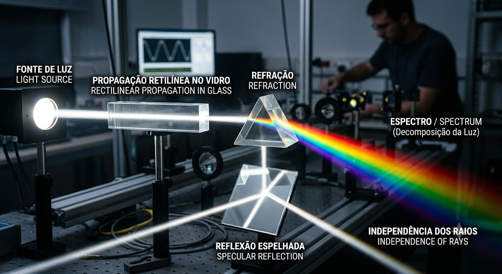

A Ilusões de ótica
Matéria: Tec.Ciencia/Fisica | Data: Agosto de 2026
Introdução
A propagação da luz é o estudo de como a luz (uma onda eletromagnética) viaja através do espaço e de diferentes materiais. No vácuo, ela atinge sua velocidade máxima: aproximadamente 300.000 km/s.
Fenômenos Fundamentais
*Reflexão: Ocorre quando a luz atinge uma superfície e retorna ao meio de origem (como em espelhos). *Refração: Ocorre quando a luz muda de meio de propagação (como do ar para a água), alterando sua velocidade e desviando sua trajetória. *Absorção: Ocorre quando a energia luminosa é retida pelo corpo, transformando-se em calor (motivo pelo qual superfícies escuras esquentam mais ao sol).
Aplicações Práticas
*Lentes e Visão: Óculos, lupas e câmeras fotográficas utilizam a refração da luz para focar as imagens.
*Fibra Óptica: Utiliza o fenômeno da reflexão interna total para transmitir dados na velocidade da luz por longas distâncias.
*Sistemas de Iluminação: O controle da propagação da luz permite criar desde faróis de carros até projetores digitais.

Conclusão
A propagação da luz é um dos pilares para compreendermos como enxergamos o mundo e como a tecnologia moderna funciona. Desde a velocidade impressionante em que ela viaja em linha reta até a forma como ela se desvia e se reflete em diferentes superfícies, esses princípios fundamentais explicam tanto fenômenos naturais incríveis, como o arco-íris, quanto inovações indispensáveis do nosso dia a dia, como lentes de visão, câmeras e a internet por fibra óptica.